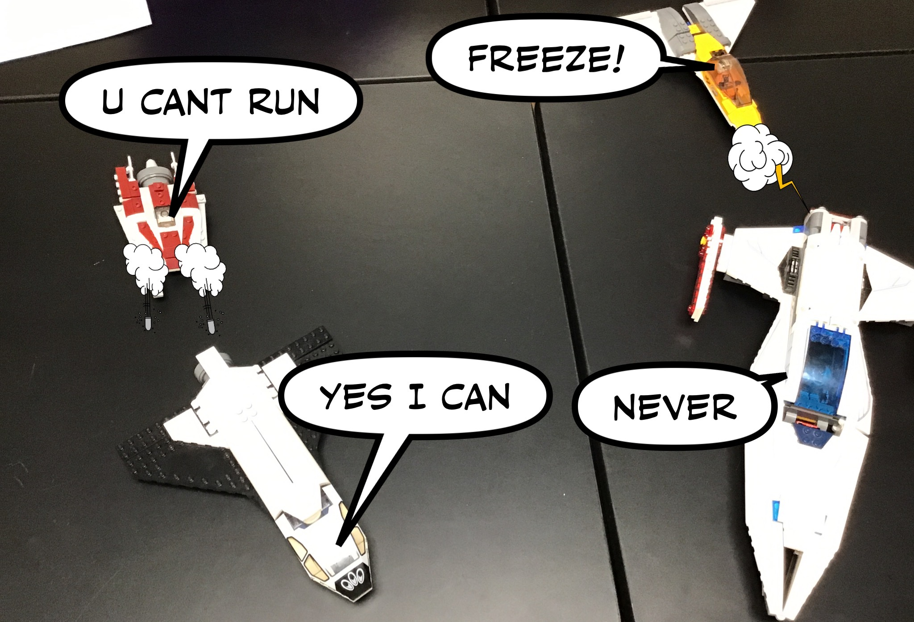
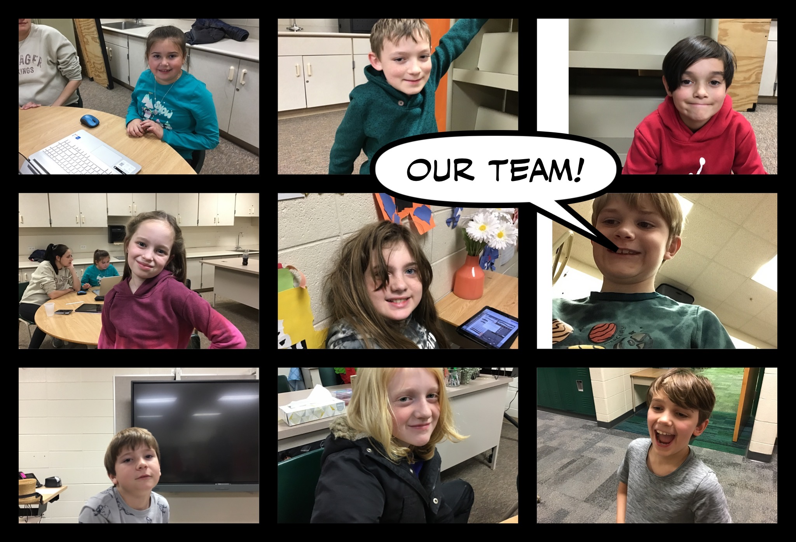
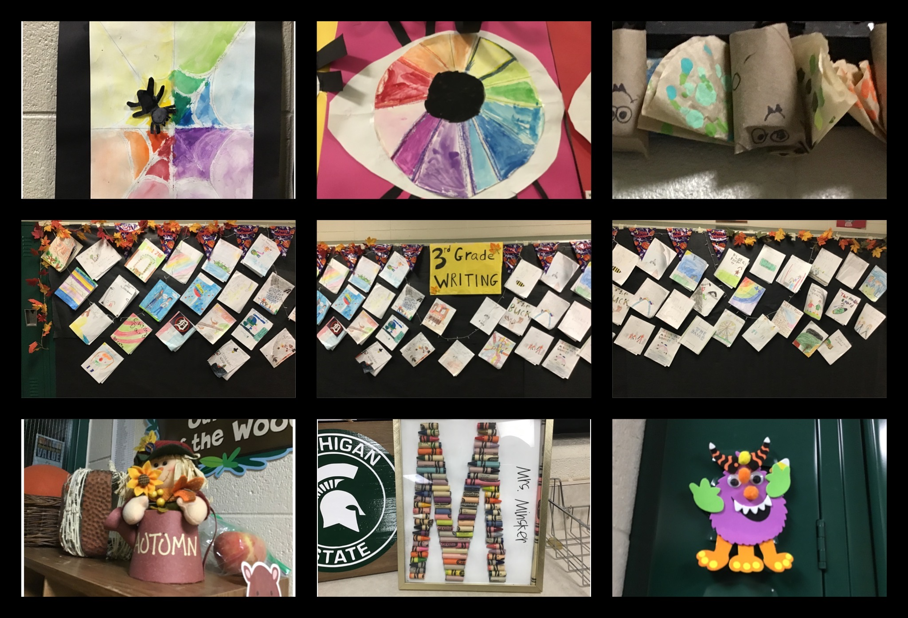

<ui:composition xmlns="http://www.w3.org/1999/xhtml"
	xmlns:f="http://java.sun.com/jsf/core"
	xmlns:h="http://java.sun.com/jsf/html"
	xmlns:p="http://primefaces.org/ui"
	xmlns:ui="http://java.sun.com/jsf/facelets"
	template="../WEB-INF/templates/master.xhtml">

	<ui:define name="content">

<style>
	.centered {
 	   text-align: center;
	}
	.fixed-size-img {
      	  width: 475px; 
     	  height: 430px;
	
    	}
	 .red {
        color: red;
    }
        img {
         display: block;
          margin-left: auto;
          margin-right: auto; 
	}
 .bold{
      font-weight: bold;
    }
	.img-1 {
      	  width: 500px; 
     	  height: 289px;
    	}
      .img2 {
      	  width: 500px; 
     	  height: 400px;
    	}
       .bing-fix {
  S    	  width: 700px; 
     	  height: 430px;
	
    	}
</style>

<h1 class="centered">
                           comic captions
</h1>

<p class="centered bold red" >
To view our video tutorial, go th this
 <a href="https://youtu.be/cLV655WtXX4" target="_blank">link</a>
</p>


<br/>

 


 


 


comic captions
take a picture of something 

press the three bars in the bottom left corner then you will get options to edit the screen
<br/>
hold the screen down and you will get a filter option and more
theres a save option in the three bars
heres some of our ideas
we are going to make a backround and put a ship infront of it.then take a picture 
then add more jets attacking it above also with the backround <br/>
go around the school and take picures of peoples art and put in in a 3x3 layout <br/>

<!-- https://www.youtube.com/watch?v=80ow9FoMDvA -->
s
</ui:define>
</ui:composition>
